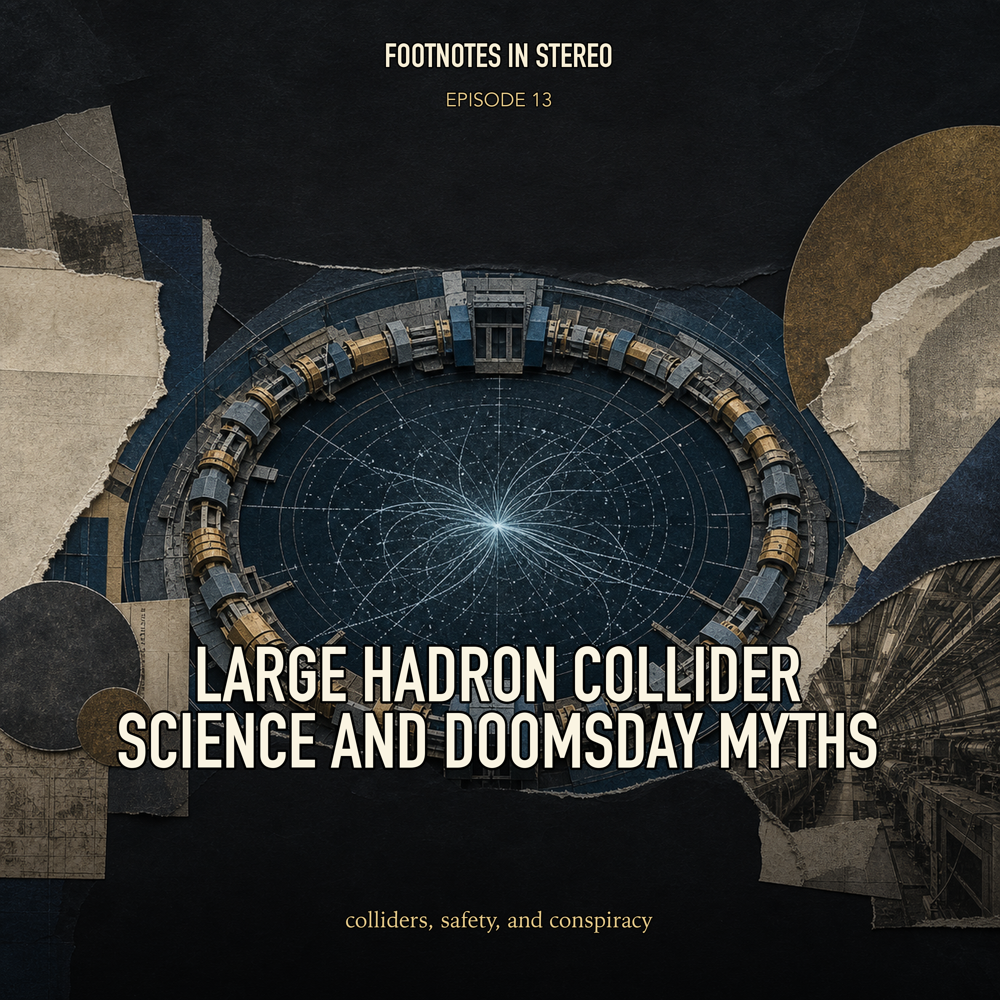

Episode 13 · Patreon bonus
Large Hadron Collider Science and Doomsday Myths
The Large Hadron Collider is one of the most ambitious machines ever built, and also one of the easiest to mythologize. Mira and Theo trace its superconducting magnets, particle beams, detectors, Higgs-era discoveries, safety review, the 2008 electrical failure, black-hole fears, and conspiracy narratives while keeping real engineering risks separate from imagined catastrophe. Created with Gemini Notebook. The conversation and voices in this episode were generated with Gemini Notebook.
Sources
Transcript
Machine transcript; lightly formatted and subject to correction.
Transcript processing. Check back shortly.